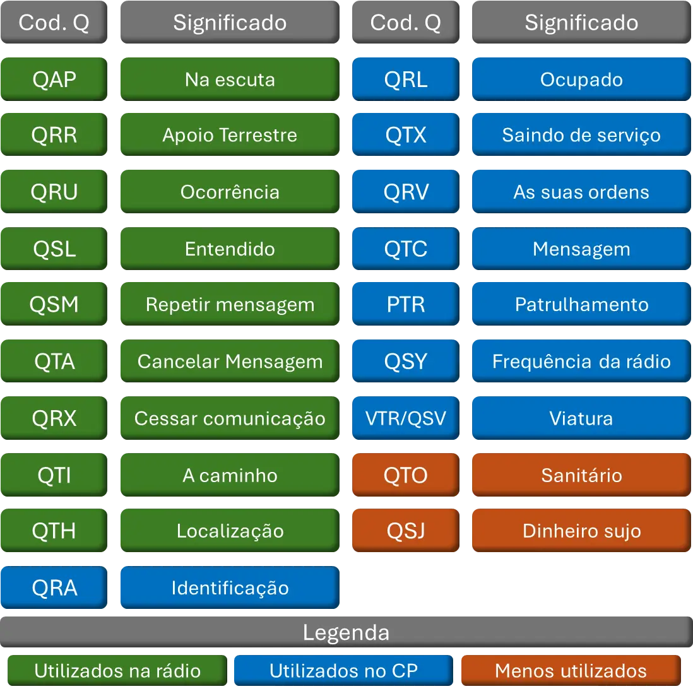
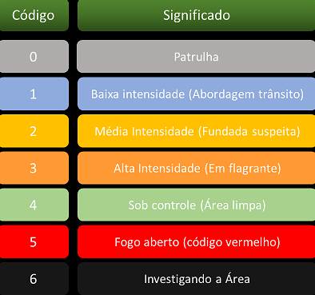
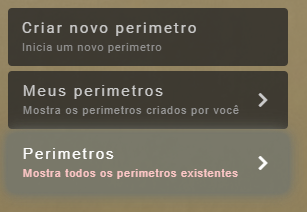
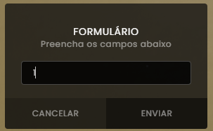

Introdução à Modulação
Senhores, atenção:
A modulação é a base de tudo no nosso trabalho policial. Sem ela, não tem como se comunicar direito, nem atender as ocorrências de forma rápida.
Nesse curso, vocês vão aprender a usar os Códigos 0 a 6, os Códigos Q e o GPS, tudo na prática, pra modular as ocorrências em tempo real.
No dia a dia da viatura, vão surgir situações em que você precisa falar rápido e claro no rádio. Isso ajuda os outros policiais a entenderem e irem direto pro apoio.
Por isso, é importante saber passar as informações certas, de forma simples e objetiva, pra garantir que a ajuda chegue o mais rápido possível.
1. Código Q
2. Código 0-6
3. Paineis
Painel F3
O painel é utilizado para enviar algumas mensagens como:
QTH: Atualizar sua localização, caso alguém peça pelo POLICE.
QRR: Solicitar apoio. Em caso de sequestro, antes de ser rendido, poderá mandar o QRR no painel.
QRT: Policial ferido, só é permitido mandar QRT em acidentes de trânsito, por exemplo, bateu no posto e explodiu, e quando ver um oficial desmaiado. Em ações de rua fica proíbido essa utilização.
CÓD.4: Para informar que uma área está sob cód. 4 e não precisam mais de apoio.
Por mais que temos esse meio de comunicação preze pela comunicação via rádio para que fique claro a situação na qual você se encontra
Painel F10
No painel F10 temos as abas de PERIMETRO e TABLET
Neste material entraremos com foco apenas na aba de perimetro
Dentro da aba perimetros temos a opção de criar um novo perimetro, ver seus perimetros e ver os perimetros que se encontram abertos
Para criar um novo perimetro devemos clicar na opção "Criar novo perimetro"
Após isso irá aparecer um formulário a ser preenchido com as seguintes informações: Nome; área; notificar
O campo "notificar" deve ser preenchido com o numero 1 sempre
Agora para fechar um perimetro deve seguir os seguintes passos
Adentrar a aba "Meus perimetros", clicar no perimetro e preencher o formulário com o numero 1
É de extrema importância que em todas as QRUs de código 5 na qual a policia troca tiro com bandidos o perimetro seja fechado. E ser reaberto APENAS depois de 5 minutos que não houve nenhum disparo.
Fechar perimetro:
 4. Rádio
Rádio
No rádio é passado apenas informações essenciais, como inicio de acompanhamento, pedido de QRR, é de carater OBRIGATÓRIO que a comunicação na rádio seja limpa, sem xingamentos e palavras ofensivas
Deve ficar atento ao pedido de QRX na rádio para passar um informe muito importante, como QRR máximo em uma favela
Respeito é uma via de mão dupla, se você quer respeito, precisa respeitar, atenção a cortar modulação de outros steves na rádio
Sempre que entrar na rádio modular "QSA Central", a central deverá responder com QSA de 1 a 5, sendo 5 a melhor avaliação de voz
Caso um GATE esteja na QRU, a modulação passa a ser exclusivamente do GATE
Início de Acompanhamento
Na modulação de início de acompanhamento, deve ser passado certas informações como QRU, QTH inicial e final, quantidade de tripulantes, cor e modelo do veículo
"QAP Central, iniciando acompanhamento a um Sultan roxo, tripulado X2, QRU de trafico de drogas, iniciado na praia, a QTI do posto do China. Segue com vaga pra mais 2 unidades de preferencia GARRA, Alguma em QRV pra prestar apoio?"
É de grande importância que as vagas pro acompanhamento seja especifícado no final da modulação
Porque preferencia pra GARRA? Pois o sultan é um carro de concessionária de alta perfomance, e veículos de alta performance é aconselhado que GARRA acompanhem
A mesma regra se aplica para motocicletas, sempre que iniciar acompanhamento a uma moto a vaga preferencial será de GTM
NUNCA modular "Perseguição", sempre "Acompanhamento"
Fim de acompanhamento
Sempre que um acompanhamento for finalizado, ou então perder um acompanhamento, deve ser informado na rádio
Caso um acompanhamento seja perdido, deve ser informado na rádio o ultimo QTH do veículo
Caso de finalizar um acompanhamento
"QAP Central, cód.4 no acompanhamento do sultan roxo, TKS a todas as unidades que prestaram apoio"
Caso de perder um acompanhamento
"QAP Central, cód.6 no acompanhamento do sultan roxo, próximo a vila do chaves"
QTA
Situações de QTA definitivo (não pode voltar):
- Falta de combustivel;
- Pneu estourar;
- Viatura capotar;
Situações de Breve QTA (pode voltar):
- P2 ou P3 crashou
- Prestar apoio a civil atropelado durante o acompanhamento
5. Chat Police - CP
Introdução ao CP
O CP é o chat da policia no qual serve para pedir patrulha, falar com alguém especifico, anunciar QRV/QTX
Lembrar sempre que o CP é um chat POLICIAL então devemos sempre manter a educação, não fazer brincadeiras e nem mandar emojis
Como deve ser feito o pedido de patrulha?
"QAP Central, Alguma QSV com vaga para P1,P2 ou P3? (1/3)"
Como deve ser feito a procura de um superior no CP?
"QAP General Delatorre, está em QRV?"
No CP também é feito escalação de ações, porém, quem assume é a C.O.E.
"COE assumindo amumu porto"
Sempre que uma ação for assumida, será pedido alinhamento ou mandar pelo CP os interessados. E como deve ser feito?
Será perguntado:"+3 patentes pra tal ação"
Deve ser respondido: "1 | patente | ação"